Wrist-Based Interaction Design for Real-Time Service Requests, Physiological Safeguards, and Split-Billing
A wrist-worn smartwatch companion designed to mitigate the auditory, cognitive, and physiological barriers inherent to high-decibel KTV social environments.
By offloading high-friction group configuration tasks from smartphones to a tactile, glanceable wearable interface, the system prioritizes immediate, context-aware micro-interactions.
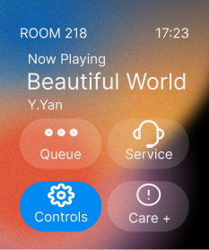
Ambient noise masks normal audio alarms, requiring high-intensity haptics for alerts.
Dimly lit rooms demand high-contrast OLED dark canvases and oversized tap targets.
Intoxication degrades coordination, necessitating 2-second hold-to-confirm delay buffers.
Multi-dimensional analysis demonstrating the failure modes of standard smartphone interfaces within high-decibel, high-energy social contexts.
High-decibel ambient noise (85–95 dB) in KTV rooms masks standard mobile acoustic alerts and voice commands, rendering phone calls and voice interactions unusable. This spatial isolation leads to missed notifications, severe delays, and low service request efficiency.
Alcohol intake slows reactions and degrades executive function, spatial orientation, and fine-motor control. Accessing multi-level smartphone menus or entering precise alphanumeric inputs becomes extremely cumbersome, high-friction, and error-prone.
The combination of vocal exertion, high-energy movement, and alcohol triggers rapid, undetected heart rate spikes. Without continuous passive wearable sensor tracking, users remain unaware of physiological danger thresholds, compromising safety.
Dividing bill totals and hailing rides at late-stage social gatherings creates chaotic collaboration. Intoxicated, fatigued users struggle with calculations, leading to payment disputes, social friction, and disrupted positive group experiences.
Iterative refinement of watch face spatial layouts and interaction models across three design cycles.
Replaced standard list structures with high-contrast, large-target touch bubbles in a 2x2 grid to leverage spatial memory and accommodate degraded motor precision.
Introduced distinct intermediate confirmation screens (e.g., 'Calling...' with countdown) to prevent accidental service invocations from erratic tactile inputs.
Eliminated alphanumeric input by utilizing pre-configured home coordinates, providing immediate, glanceable vehicle confirmation (license plate and color).
Adopts a deep charcoal canvas background to support OLED energy conservation, paired with rich sunset red-orange gradients (`#E0533C` to `#11161B`) for warm room visuals and vibrant active blue triggers.
System Usability Scale (SUS) scores showed a significant increase from an initial 62.4 (Round 1) to a final 85.8 (Round 3), demonstrating substantial improvement in task completion rate.
Issues discrete service calls to KTV staff, confirming success via a localized haptic vibration pattern.
Continuously monitors PPG heart rate trends, automatically triggering localized prompts or peer alerts during abnormal cardiovascular spikes.
Initiates automated ride-hailing to the user's primary address with a single tap, displaying essential driver credentials.
Computes and displays individual cost divisions directly on the wrist, synchronizing status across group devices to minimize transaction friction.
Uses built-in Optical PPG sensor for heart rate tracking, linear resonant actuator (LRA) for haptic prompts, and GPS for safe dispatch.
Sequential task flows tracing cross-page transition states: home dashboard navigation, service classification menu, optical PPG vitals monitoring, hold-to-confirm staff calls, GPS safe transit dispatch, and peer-synchronized cost settlement.
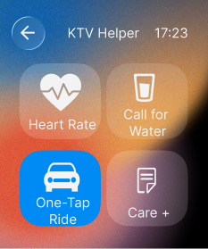
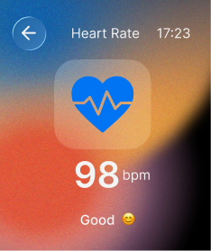
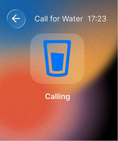
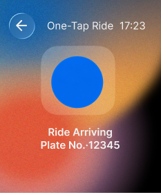
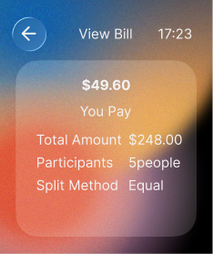
Supporting Evidence: High-Fidelity Interface Sets, Hand-Drawn Sketches, and Academic References
High-fidelity screen displays mapping the complete smartwatch companion subsystem.
Room, track, shortcuts.
Health, Service, Ride options.
PPG sensor display.
Intermediate calling state.
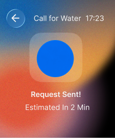
Staff confirmation alert.
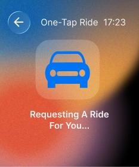
Taxi booking loader.
Driver plate code.
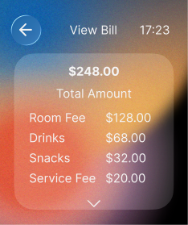
Total room fees list.
Equal split payment.
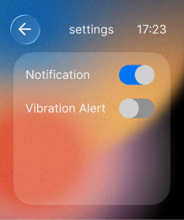
Vibration & toggles.
Evidence of visual ideation, paper wireframes, and digital wireflows demonstrating incremental iterations.
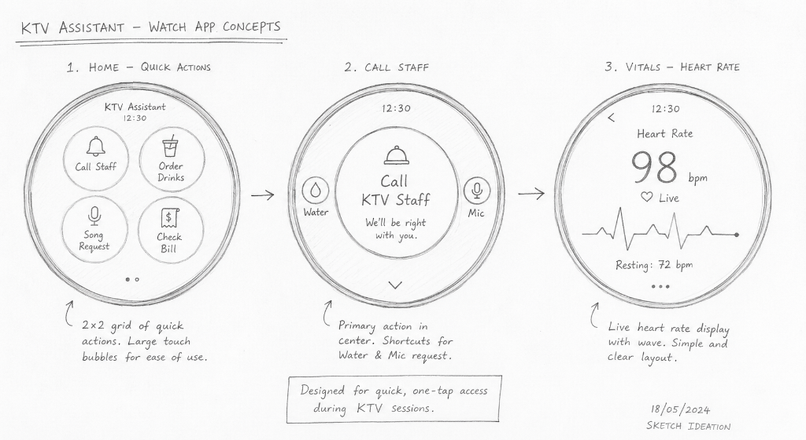
Pencil concepts mapping round watch target sizing and circular button bubble trials.
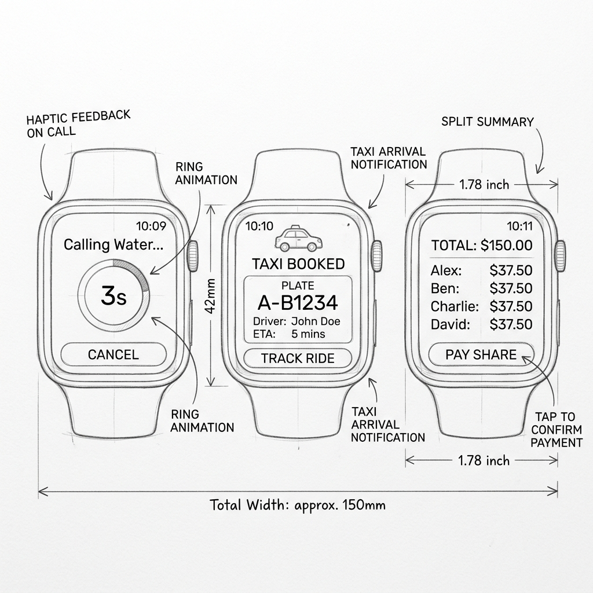
Sketched rectangular casing dimensions, cancel delay rings, and swipe target outlines.
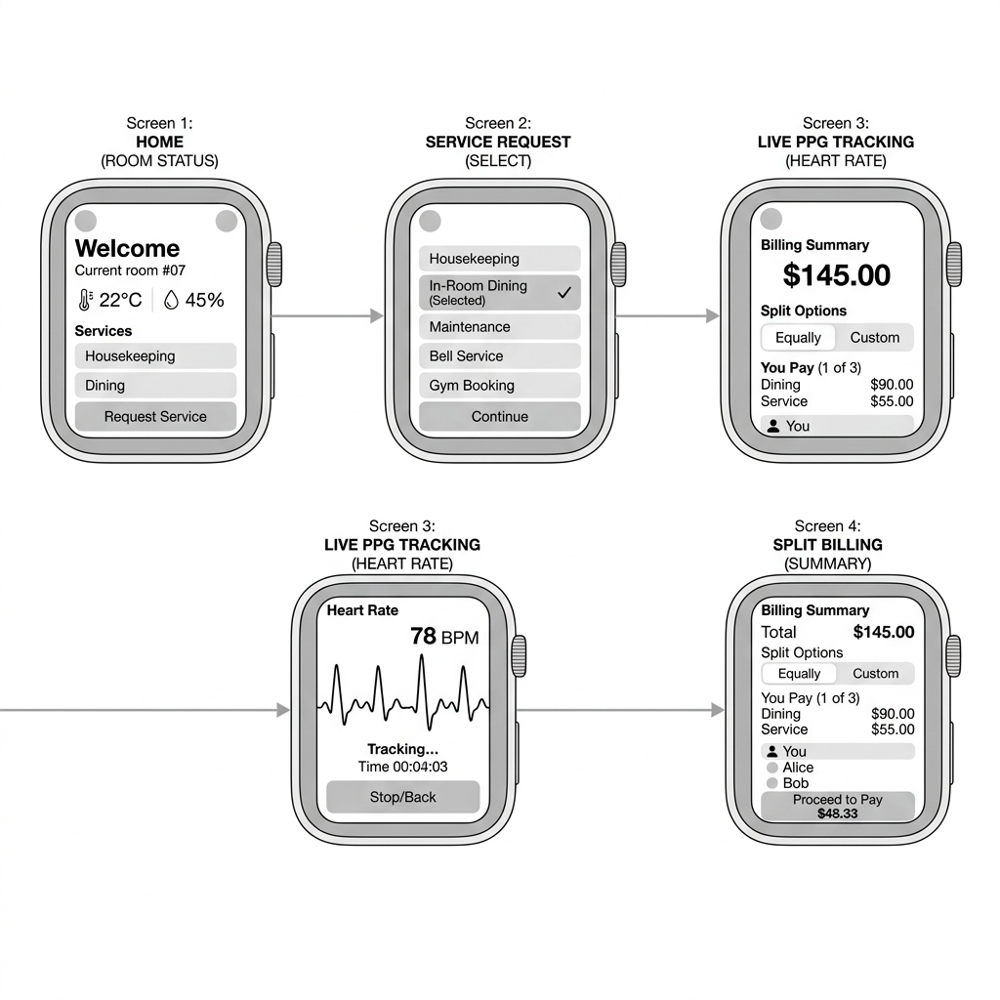
Figma grey-box interactive wireflow tracing the primary watch assistant journey paths.
| Heuristic Category | Identified Watch Friction Point | Design Correction & Wearable Adaptation |
|---|---|---|
| Visibility of System Status | Absence of audible feedback prevents confirmation of service requests in high-decibel (85+ dB) social spaces. | Designed prominent full-screen state transitions paired with a distinct, sustained haptic vibration pattern. |
| Error Prevention | Intoxication impairs psychomotor skills, causing accidental touch inputs on adjacent control elements. | Integrated a 2-second touch-and-hold delay timer for high-consequence operations (Safe Ride, Care+ trigger) to permit cancellation. |
| Match System & Real World | Standard mobile transaction terminology introduces excessive cognitive load under fatigue. | Adopted natural, task-oriented phrasing ("Total Amount", "Your Share", "Split Summary") paired with visual avatars. |
| Flexibility & Efficiency | Navigating backward from deep menu levels requires repetitive, precise swipe gestures. | Provided a persistent, high-contrast back button and mapped physical crown clicks for immediate home navigation. |
Week 8 Review: Creative Director recommended moving away from complex mobile-style inputs. Instructed focusing on wearable-specific constraints: zero text inputs, high contrast, and haptic indicators.
Week 11 Evaluation: Peer testing showed users loved the physical safety net aspect. Recommended highlighting heart rate warnings in intoxication scenarios.
Access the high-fidelity design workspace and interactive smartwatch companion prototype via the verified paths below:
https://www.figma.com/design/UAzEmNfMZdeTrRSIGjmM0f/Final-Yingtai-Yan?t=3a3D1PHtBif12Ceh-1
https://www.figma.com/proto/